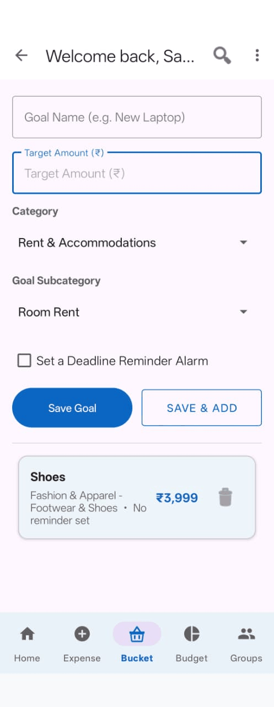

What the Bucket tab is for
The Bucket tab is for things you intend to buy but haven't yet — a laptop, a trip, a new phone. It's separate from your expenses, which record money already spent.
Adding a goal

- Open the Bucket tab.
- Goal Name — what you're saving for.
- Target Amount — roughly what it costs.
- Pick a Category and Subcategory.
- Tap Save Goal.
Save & Add saves the goal and clears the form, so you can add several in one go.
Setting a reminder
Tick Set Reminder and the date and time fields appear. Spendify will send you a notification then.
Quick date buttons
Three shortcuts save you opening the date picker:
- Tomorrow — tomorrow at 10 AM
- Next Week — next Monday at 10 AM
- Next Month — same date next month at 10 AM
Or tap the Date and Time fields to choose exactly. Past dates aren't selectable, since a reminder for a time that has already gone would never arrive.
If the reminder time you've picked has already passed today, Spendify tells you before saving rather than saving the goal and quietly failing to set the alarm.
Alarm permission
On newer Android versions, exact alarms need permission the first time. If Spendify asks, allowing it means reminders arrive at the time you set. If you decline, the goal is still saved — only the reminder is skipped, and the app tells you so.
When you reach a goal
Tap the tick next to a goal to mark it as achieved.
The goal stays in your list — it moves below the ones you're still saving for, its name is struck through, and the details line reads Achieved. Tapping the tick again puts it back.
Marking rather than deleting means you keep the record of what you saved for and got. Deleting it would erase that.
Any reminder set for that goal is cancelled when you mark it achieved — a reminder to save for something you have already bought is just an interruption.
Deleting a goal
If you have changed your mind about a goal entirely, the bin icon on the right removes it. It asks you to confirm first, and cannot be undone.